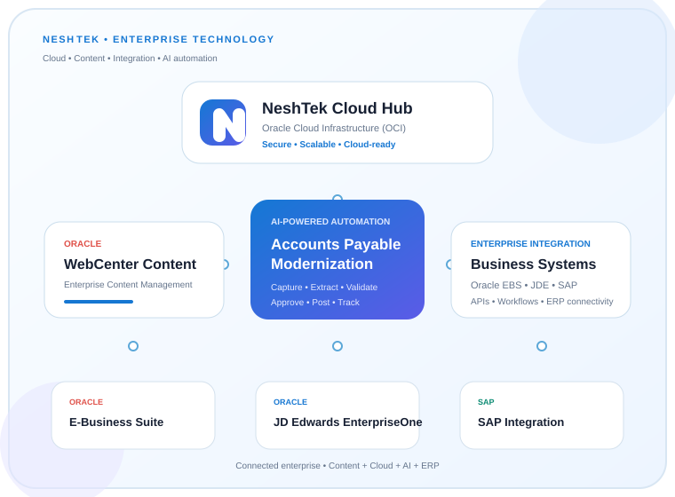

Enterprise Content.
Cloud. Integration. AI.
Neshtek helps enterprises modernize content, connect business applications and automate document-driven processes with Oracle, Java, cloud and AI technologies.

From content management and cloud infrastructure to ERP integration and intelligent automation, Neshtek brings the technology layers together.
WebCenter Content
Implementation, upgrade, migration, custom development, integrations and production support for Oracle WebCenter Content.
Oracle Cloud Infrastructure
OCI architecture, compute, networking, databases, security, DevOps, migration and cloud-native modernization.
Oracle E-Business Suite
Enterprise content and workflow integration with Oracle E-Business Suite for connected business processes.
JD Edwards EnterpriseOne
Integration and document-driven process solutions connecting JD Edwards EnterpriseOne with enterprise content services.
SAP Integration
Content, document and workflow integration patterns connecting SAP processes with modern enterprise platforms.
Oracle SOA & OIC
Service-oriented integration and Oracle Integration Cloud solutions for APIs, workflows and application connectivity.
Java & Spring Boot
Modern enterprise applications, microservices, APIs and cloud-ready services built with Java and Spring Boot.
Intelligent Automation
AI document understanding, invoice processing, classification, extraction, validation and workflow automation.
Modernize Accounts Payable Processes
Move from manual invoice handling to an intelligent, traceable AP process using document capture, AI extraction, validation, approvals and ERP integration.
Integrate Content With Your Business Systems
Connect enterprise content and automation solutions with the systems your business already depends on, including Oracle E-Business Suite, JD Edwards EnterpriseOne and SAP.
Specialized enterprise services across content, cloud, integration, application modernization and AI automation.
Oracle WebCenter Content
Implementation, upgrade, migration, custom development and 24×7 support.
Learn more →Oracle Cloud Infrastructure
Architecture, migration, DevOps, security, integration and managed cloud services.
Learn more →ERP & Application Integration
Connect WebCenter Content with Oracle E-Business Suite, JD Edwards EnterpriseOne and SAP.
Learn more →Oracle SOA & OIC
Integration services, APIs, process automation and enterprise application connectivity.
Learn more →AI AP Modernization
Modernize Accounts Payable with intelligent document processing and workflow automation.
Learn more →Managed Enterprise Support
24×7 production support, monitoring, enhancements and SLA-based services.
Learn more →